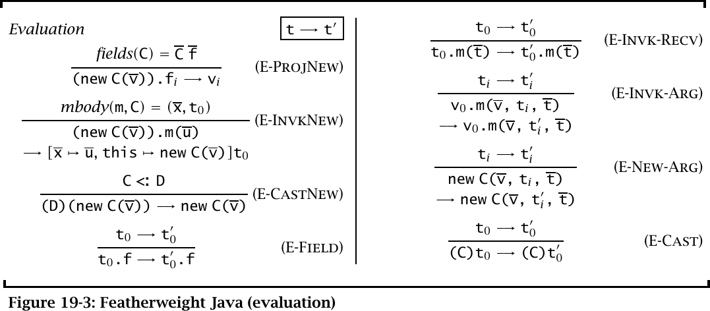

E-ProjNewacesso a campo
fields(C) = C f(new C(v)).fi ⟶ vi
new Cachorro(new Gato()).amigo⟶new Gato()O i-ésimo campo devolve o i-ésimo argumento.
Um núcleo mínimo de Java com sintaxe, tipos e semântica que cabem numa página.
Objetos, classes e herança são montados com peças do lambda-cálculo: registros, referências e subtipagem.
Mostra o mecanismo por baixo, mas o objeto deixa de ser visível como conceito.
Classes e objetos são construções da própria linguagem, com regras de tipo e de avaliação próprias.
É o caminho do Featherweight Java (FJ), proposto por Igarashi, Pierce e Wadler em 1999.
Um modelo formal serve para descrever uma linguagem com precisão e provar propriedades dela, como segurança de tipos.
Quanto mais recursos o modelo cobre, mais pesada fica a prova. FJ escolhe o outro extremo: corta tudo que alonga a prova sem mudar o argumento.
O resultado é útil para estender Java no papel: genéricos (GJ), raw types, classes internas e compilação que preserva tipos foram estudados sobre FJ.
Inside every large language is a small language struggling to get out. Igarashi, Pierce e Wadler (1999)
thissuper.m(), nullint, bool), exceçõespublic/privateSem atribuição, FJ é um fragmento funcional de Java. Mesmo assim é Turing-completo: dá para codificar o lambda-cálculo nele.
class A extends Object { A() { super(); } } class B extends Object { B() { super(); } } class Pair extends Object { Object fst; Object snd; // construtor Pair(Object fst, Object snd) { super(); this.fst=fst; this.snd=snd; } // método Pair setfst(Object newfst) { return new Pair(newfst, this.snd); } }
Convenções rígidas, para a sintaxe ficar regular:
extends sempre escrito, mesmo para Objectsuper(...) e depois this.f=fthis.snd, nunca sndreturn t;super e = só aparecem dentro do construtor.
| Forma | Gramática | No exemplo |
|---|---|---|
| Variável | x | newfst, this |
| Acesso a campo | t.f | this.snd |
| Chamada de método | t.m(t) | new Pair(...).setfst(new B()) |
| Criação de objeto | new C(t) | new A(), new Pair(..., ...) |
| Cast | (C) t | (Pair) t.fst |
A barra em t indica sequência: t1, ..., tn.
this é tratado como variável, não palavra-chave. Ele fica implicitamente ligado em todo corpo de método.
Valores são só objetos com todos os argumentos já avaliados. "Tudo é objeto", como no lambda-cálculo "tudo é função".
Um programa é o par (CT, t): uma tabela de classes e o termo a avaliar, que faz o papel do main.
Metavariáveis: A..E classes, f e g campos, m métodos, x parâmetros, s e t termos, u e v valores.
NatPair = {fst:Nat, snd:Nat}
O nome é só abreviação. Subtipagem é decidida comparando a forma dos tipos.
Mais elegante para provas e para recursos avançados (polimorfismo, tipos abstratos). Domina a literatura.
class Pair extends Object { ... }
Todo tipo tem nome, e subtipagem é a que o programador declarou com extends.
instanceofC <: D é quase trivialextendsA tabela de classes CT mapeia cada nome de classe para sua declaração.
Object é especial: não está na tabela, não tem campos nem métodos.
Condições de sanidade da tabela:
Object não está em CT<:| Função | Devolve | Como |
|---|---|---|
| fields(C) | todos os campos C f, herdados primeiro | campos de D (superclasse) seguidos dos de C; fields(Object) é vazio |
| mtype(m, C) | tipo B → B | procura m em C; se não achar, sobe para a superclasse |
| mbody(m, C) | par (x, t): parâmetros e corpo | mesma busca subindo a hierarquia: é aqui que mora a sobrescrita |
| override(m, D, C→C0) | sobrescrita válida? | se m existe em D, o tipo tem que ser idêntico |
Exemplo: fields(Pair) = Object fst, Object snd e mbody(setfst, Pair) = (newfst, new Pair(newfst, this.snd)).
fields(Cachorro) = Animal amigo · mtype(falar,Cachorro) = [] → Som · mbody(falar,Cachorro) = ([], new Latido())
Fazem o passo real: selecionam campo, executam método ou removem cast.
Não calculam o resultado: levam a avaliação até o próximo subtermo.
new Cachorro(new Gato()).amigo⟶new Gato()O i-ésimo campo devolve o i-ésimo argumento.
new Gato().falar()⟶new Miado()Busca o corpo e substitui argumentos e this.
(Animal) new Gato()⟶new Gato()Confere a classe real e elimina o cast.
amigo e chamar falar, o argumento do construtor precisa virar valor.amigo é o único campo de Cachorro, então sai new Gato().mbody(falar,Gato) encontra o corpo sobrescrito: new Miado().Contexto inicial: E = new Cachorro([]).amigo.falar(). O buraco marca exatamente o próximo passo.
((Pair)[]).snd. Primeiro resolvemos o acesso .fst mais interno.fst é o primeiro campo de Pair: sai o primeiro argumento, outro Pair.Pair <: Pair pela reflexividade. O cast passa e desaparece.snd é o segundo campo: sai new B(), um valor.new Cachorro(new Gato()).amigo
O campo foi declarado Animal amigo. É só isso que T-Field pode concluir.
new Cachorro(new Gato()).amigo
E-ProjNew vê o valor concreto guardado no objeto: new Gato().
Mesmo fenômeno no livro: fst tem tipo Object, embora guarde um Pair; o cast para Pair torna .snd tipável.
setfst: buscar o corpo e substituirnewfst↦new B()
this↦receptor
newfst e o corpo exibido.newfst recebe o argumento; this recebe o objeto receptor inteiro..snd restante vira new B(). O resultado é valor.Somoverride em FJ.new Cachorro(new Gato()).apresentar()apresentar tenha sido escrito em Animal.mbody sobe a hierarquia até achar o corpo de apresentar.this pelo receptor real.this.new Gato().amigofields(Gato) não contém amigo. E-ProjNew não se aplica.
new Som().falar()mbody(falar,Som) é indefinido. E-InvkNew não se aplica.
(Cachorro)(Animal)new Gato()O cast externo é aceito estaticamente; após o upcast sumir, sobra (Cachorro)new Gato().
(Cachorro)(Animal)new Gato()⟶ E-CastNew(Cachorro)new Gato()⟶stuck: Gato ≮: CachorroSegurança de tipos elimina campo e método inexistentes. A exceção de progresso é um cast preso (C)(new D(...)) com D ≮: C.
Lê-se Γ ⊢ t : C como "no ambiente Γ, o termo t tem tipo C". Ex.: Γ ⊢ new Gato() : Gato.
Não há subsunção solta: o <: aparece onde é preciso. Cada termo tem um tipo mínimo único.
O compilador Java rejeita cast entre classes não relacionadas. Por que FJ aceita?
Porque um termo bem tipado pode virar um assim durante a avaliação:
(A)(Object)new B() // T-DCast: ok ⟶ (A)new B() // só T-SCast tipa
Sem T-SCast, a preservação de tipos seria falsa. Uma tipagem FJ só corresponde a uma tipagem Java se não usar essa regra.
(Animal)new Gato()T-UCast · sempre seguro(Gato)(Animal)new Gato()T-DCast · checa em runtime(Cachorro)new Gato()T-SCast · classes irmãsthis : C. O resultado pode ser subtipo do declarado.super e inicializar os próprios.O tipo pode ficar mais específico durante a avaliação, nunca diferente.
Exemplo: (Object)new A() tem tipo Object e avança para new A(), de tipo A.
A única forma de travar é um downcast que falha. Campo e método inexistentes nunca acontecem.
Se o programa só tem upcasts, ele nunca trava. Em Java completo, o cast que falha vira exceção.
| Exerc. | Pergunta | Ideia da resposta |
|---|---|---|
| 19.4.1 | Por que não há regra dizendo que Object é supertipo de tudo, como S-Top? | Toda classe declara uma superclasse e não há ciclos, então toda cadeia de extends termina em Object. A transitividade já dá C <: Object, e os únicos tipos são classes. |
| 19.4.3 | Como adicionar atribuição a campos? | Seguir o capítulo 13: introduzir locações e uma memória (heap). Objetos passam a ser referências, e a avaliação deixa de acontecer só na sintaxe. |
| 19.4.7 | Como adicionar super.m()? | A busca do corpo precisa começar na superclasse da classe onde o método foi escrito, não na do receptor. O corpo tem que lembrar a classe que o definiu. |
new e castextends